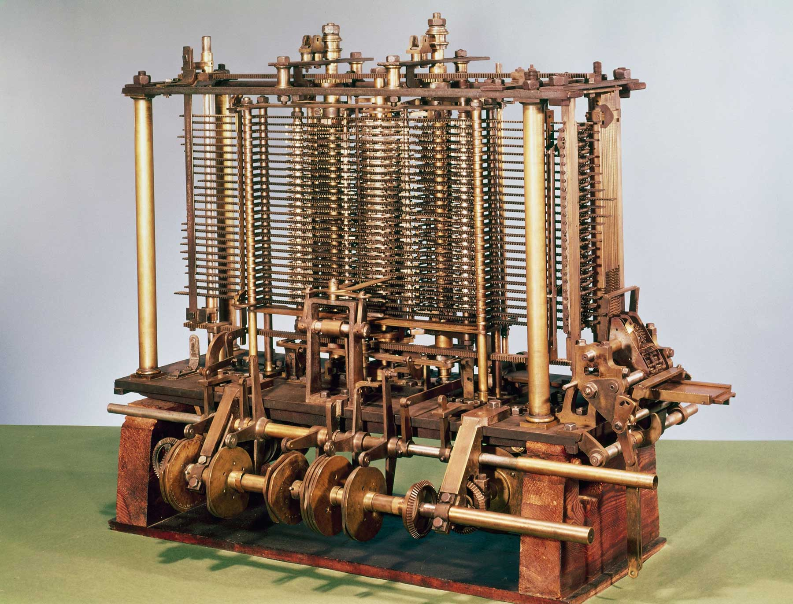

Analytical Engine

Welcome to my timeline! On this website you will find descriptions of major computing advancements and their development. All items with a red tint were developed by the military or receieved signifigant funding from it.
Explore TimelineThe first programmable computer concept.
The analytical engine was the first conceptual programmable computer design, taking the designs of a loom and being programmed with punch-cards.
The engine was designed by Charles Babbage with the concept of programming it to do more than simple calculations was thought up by Ada Lovelace in her notes on the engine.
The engine was never fully built, but its legacy lives on in all modern computers along with Ada's algorithms.

The mathematical foundation of modern computing.
The Turing machine was a brilliant idea that became the foundation of all modern computers.
Alan Turing came up with this theoretical device while studying at Princeton University. It was basically a mental model that could run any algorithm, showing what could and couldn't be calculated mechanically.
Though Turing created it to tackle a purely mathematical problem, his work ended up being crucial for British military codebreaking during World War II. His ideas helped build the Bombe machines at Bletchley Park that broke German Enigma codes, cutting the war short and saving countless lives.

The first general-purpose electronic computer.
ENIAC was the first electronic computer you could actually program to solve different problems, built for the U.S. Army during World War II.
The Army wanted it to calculate artillery firing tables, but the project ran way over budget. It cost $487,000 (about $7 million today) instead of the planned $61,700. Still, the military got their money's worth as it changed computing forever.
Six women became the world's first computer programmers, figuring out how to make ENIAC work not just for artillery calculations but also for hydrogen bomb research, weather forecasting, and studying cosmic rays. This set the pattern of military funding driving computing breakthroughs that continues today.

The building block of modern electronics.
The transistor was dreamed up at Bell Telephone Labs by three scientists: John Bardeen, Walter Brattain, and William Shockley. It could boost electrical signals and switch them on and off – something only bulky vacuum tubes could do before.
The military quickly saw how useful tiny transistors could be, funding research and using them first in radar systems and specialized equipment when they were still too expensive for everyday products.
This little device turned out to be one of the most important inventions ever, making electronics smaller and using less power. Without transistors, we wouldn't have the chips that run our phones, computers, and pretty much everything else with an on/off switch.

The first commercial computer in the United States.
UNIVAC I was the first computer made to sell to businesses and government in the United States. It was created by J. Presper Eckert and John Mauchly, the same guys who built ENIAC.
The first one went to the Census Bureau, but the military snatched them up quickly too. The Air Force, Navy, and Army all bought these machines for their data work, showing how the military kept pouring money into early computing.
This giant machine weighed 13 tons and had over 5,000 vacuum tubes. It became famous when it correctly predicted Eisenhower would win the 1952 presidential election after seeing just 5% of votes. That was the moment regular people started to realize computers might be important in everyday life.

The precursor to the modern internet.
ARPANET, which grew into today's internet, was built by the Defense Department's Advanced Research Projects Agency because they wanted a network that could still work even if parts of it were destroyed in a nuclear attack.
The military spent about $1 million a year on this project, which first connected four university computers in 1969: UCLA, Stanford Research Institute, UC Santa Barbara, and the University of Utah.
Despite being created for military purposes, the network took on a life of its own as researchers used it to share information openly with each other. That spirit of openness eventually shaped the internet we use today, showing how technology can outgrow its original purpose.

The influential operating system that shaped computing.
Unix was a clever operating system created at Bell Labs by Ken Thompson and Dennis Ritchie after a larger, military-funded project called MULTICS fell apart. They kept the good security features but made everything simpler.
Though the military didn't directly pay for Unix at first, they quickly started using it in defense systems because it was secure, could handle multiple users at once, and had a flexible design. The Department of Defense later standardized on Unix versions for many important systems.
The way Unix was built – using small tools that could be connected together rather than one massive program – influenced nearly every operating system that came after it, including Linux and macOS. Its impact on how software is designed can't be overstated.
The personal computers that revolutionized the industry.
The Apple I was put together by Steve Wozniak and sold by Steve Jobs, bringing serious computing power to hobbyists when previously only big companies and government agencies could afford computers.
The Apple II that followed turned computers from complicated kits into appliances anyone could use. It sold millions of units and created the personal computer industry as we know it.
Apple's success kicked off a revolution that put computing power in regular people's hands, creating whole new industries around software, educational programs, and business tools that changed our relationship with technology forever.

The groundbreaking supercomputer of its era.
The Cray-1, designed by Seymour Cray, was the first supercomputer to really catch on commercially. It had a distinctive circular shape that helped with cooling and kept the wires between components as short as possible.
Military and intelligence agencies were the big buyers of these massive machines. The first Cray-1 was installed at Los Alamos National Laboratory for $8.8 million ($42 million today), where they used it to simulate nuclear weapons and crack codes.
It could perform 160 million calculations per second, which was mind-blowing at the time. The Cray-1 established America as the leader in high-performance computing, becoming essential for military simulations, weather forecasting, and scientific problems too complex to test in the real world.
The computer that standardized personal computing.
The IBM Personal Computer brought order to the chaotic early computer market by combining an open design with IBM's trusted business reputation, making personal computers respectable enough for corporations to buy.
IBM used off-the-shelf parts and published their technical details, allowing other manufacturers to make compatible machines. This accidentally created the huge market of "IBM PC clones" that would dominate computing for decades.
Their fateful decision to let Microsoft provide the operating system instead of making it themselves changed history. It put Microsoft in the driver's seat of the software industry and created the split between hardware and software companies that still shapes computing today.

The first mass-market computer with a graphical interface.
The Macintosh changed how people used computers by introducing the first commercially successful graphical interface with mouse control, making computers accessible to non-technical folks.
Apple's famous "1984" Super Bowl ad, directed by Ridley Scott, painted the Mac as a tool for creativity and freedom against the corporate conformity of IBM PCs.
Though it was expensive and limited at first, the Mac pioneered design ideas that eventually showed up in all personal computers, including windows, icons, menus, and mouse pointers. It transformed computers from technical tools into creative devices for regular people.
Microsoft's first graphical operating environment.
Windows 1.0 was Microsoft's first attempt at a graphical interface, created as an answer to Apple's Macintosh. It let IBM PC compatible computers run several programs at once in a more user-friendly environment.
People criticized it for being slow and limited compared to the Mac, but it represented Microsoft's critical move from making programming languages to creating operating systems.
This humble beginning eventually grew into the world's dominant computer operating system, with later versions of Windows powering over 90% of the world's personal computers by the 1990s, making Microsoft the most influential software company on the planet.

The system that transformed how we share information.
The World Wide Web, invented by Tim Berners-Lee at CERN in Switzerland, turned the internet from a specialized network used by academics and government into a global information system anyone could access.
By creating three key technologies – HTML for structuring content, URLs for addresses, and HTTP for transferring data – Berners-Lee built a platform where anyone could publish information without asking permission from gatekeepers.
His decision to give away these technologies for free instead of patenting them allowed explosive growth, creating the largest collection of human knowledge in history and completely changing how we communicate, do business, and share ideas across borders.

The open-source kernel that powers professional and personal computing alike.
Linux, an open-source operating system core created by Finnish student Linus Torvalds, combined the power of Unix with a new approach to software development where volunteers worldwide contributed code.
Released under a license that kept the source code free and available to everyone, Linux grew from a hobby project into the backbone of the internet, running most web servers, supercomputers, and eventually Android phones.
This collaborative approach challenged traditional software development models and proved that complex, high-quality software could be created through voluntary cooperation rather than corporate development, changing how software would be written for years to come.

Bringing high-power computing to the masses, from afar.
Cloud computing changed IT by moving from computers you had to buy and maintain yourself to computing resources you could rent over the internet, completely changing how businesses and people access technology.
Amazon Web Services started this trend by turning its massive internal computer systems into services others could rent, followed by competitors like Microsoft Azure and Google Cloud, creating a massive industry worth trillions.
This change meant organizations no longer needed their own physical computer rooms and servers, making high-end computing resources available to everyone and letting startups grow quickly without spending millions on hardware.

The mobile device that redefined personal computing.
The iPhone reinvented the mobile phone by combining a responsive touch screen, real web browser, and App Store into a device that put computer power in your pocket.
Steve Jobs' vision of a computer with no physical keyboard that could become different tools through software changed how we interact with technology, making computing truly personal and always available.
The mobile revolution that followed moved computing from desktops to pockets, creating whole new industries around mobile apps, changing how we navigate, shop, connect, and work, while making digital technology an intimate part of everyday life for billions of people.
The next frontier in computational power.
Quantum computing uses the weird properties of quantum physics to process information in ways traditional computers simply cannot, potentially solving problems that would take normal machines millions of years.
Military and intelligence agencies worldwide, including the U.S. Department of Defense and China's government, are pouring billions into quantum research, knowing it could crack current encryption systems and create unbreakable communications.
Though still in early stages, with machines having just dozens or hundreds of quantum bits (qubits), this technology could revolutionize drug discovery, materials science, and more, while creating serious security concerns that have sparked a technology race between major world powers.

Bringing newfound efficiency to many fields.
Modern artificial intelligence has made incredible leaps beyond simple programming, creating tools that can learn from data, recognize patterns, and even generate new content that looks like human work.
In medicine, AI systems analyze millions of medical images to spot cancers that doctors might miss, design new drug molecules by predicting how they'll behave in the body, and comb through genetic data to uncover disease links that would take humans decades to find.
Beyond healthcare, AI now writes text, creates artwork, composes music, translates languages instantly, drives cars, predicts weather patterns, and optimizes energy grids—changing nearly every field it touches while raising important questions about privacy, job displacement, and how we'll navigate a world where machines increasingly think alongside us.
I hope that this timeline was informational and taught you something new.
If you have any additional questions, please ask!
Back to Top